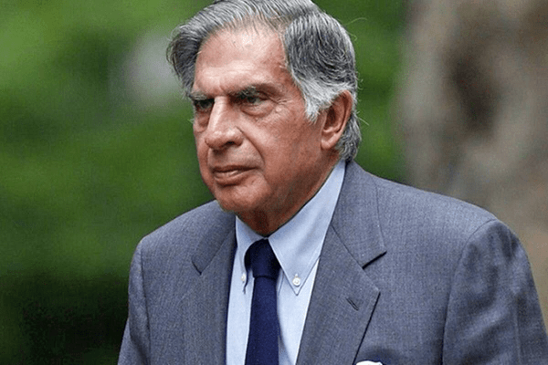

Honorable Mr Ratan tata

Honorable Mr Ratan Tata
Ratan Tata, in full Ratan Naval Tata, (born December 28, 1937, Bombay [now Mumbai], India), Indian businessman who became chairman (1991–2012 and 2016–17) of the Tata Group, a Mumbai-based conglomerate.
He gained experience in a number of Tata Group businesses and was named director in charge (1971) of one of them, the National Radio and Electronics Co. He became chairman of Tata Industries a decade later and in 1991 succeeded his uncle, J.R.D. Tata, as chairman of the Tata Group.☛Upon assuming leadership of the conglomerate, Tata aggressively sought to expand it, and increasingly he focused on globalizing its businesses. In 2000 the group acquired London-based Tetley Tea for $431.3 million, and in 2004 it purchased the truck-manufacturing operations of South Korea’s Daewoo Motors for $102 million. In 2007 Tata Steel completed the biggest corporate takeover by an Indian company when it acquired the giant Anglo-Dutch steel manufacturer Corus Group for $11.3 billion.